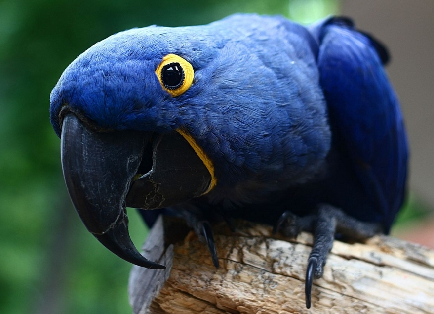
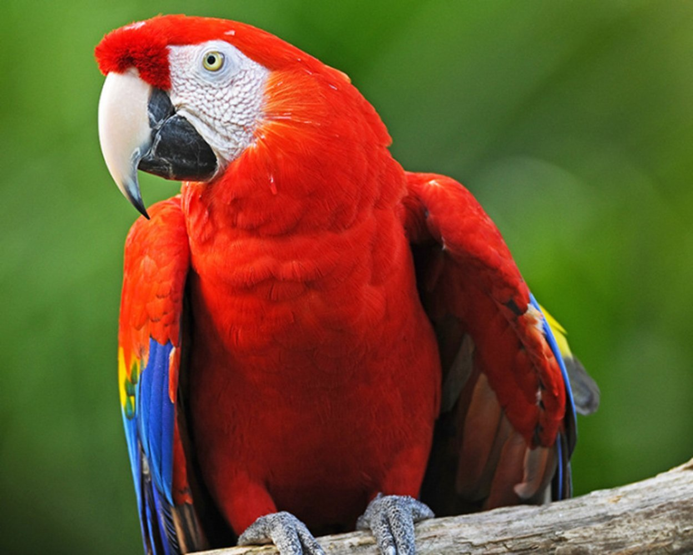
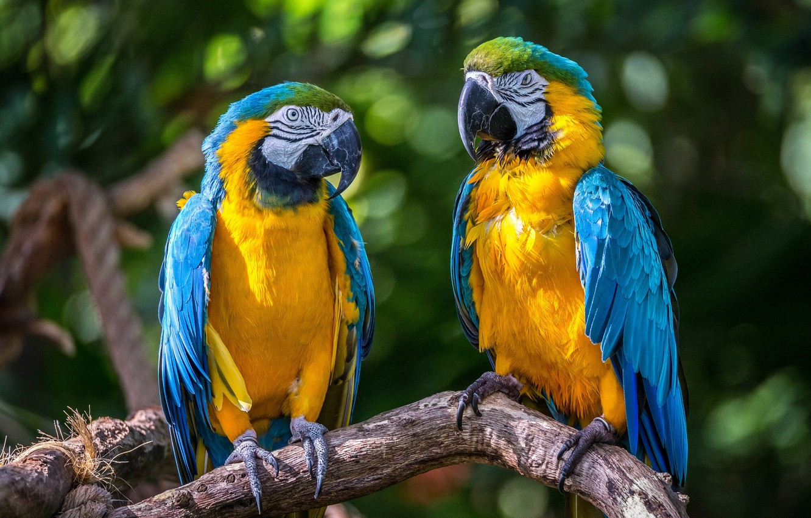
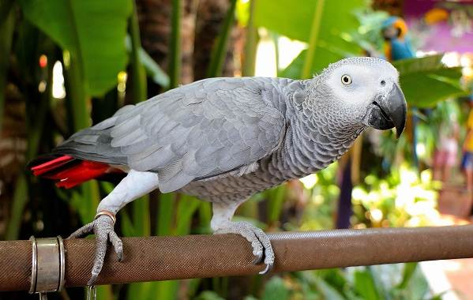
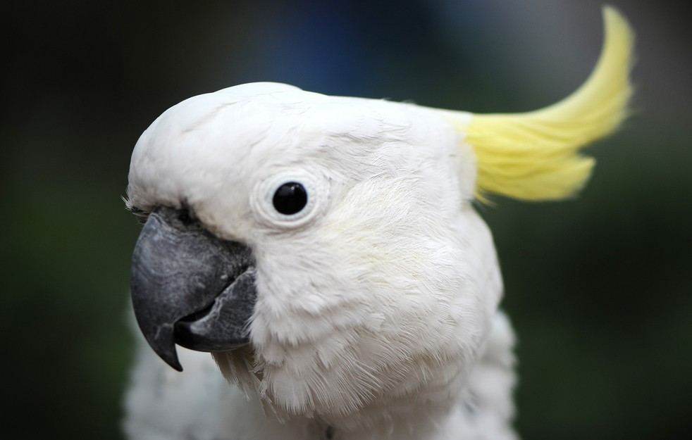
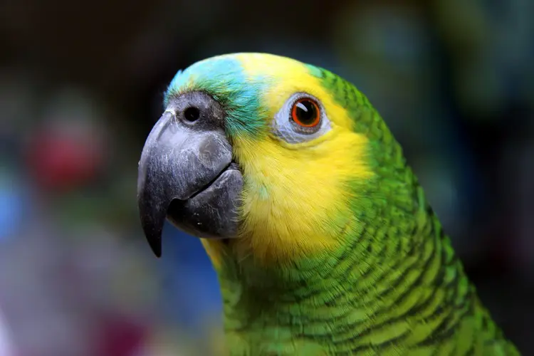
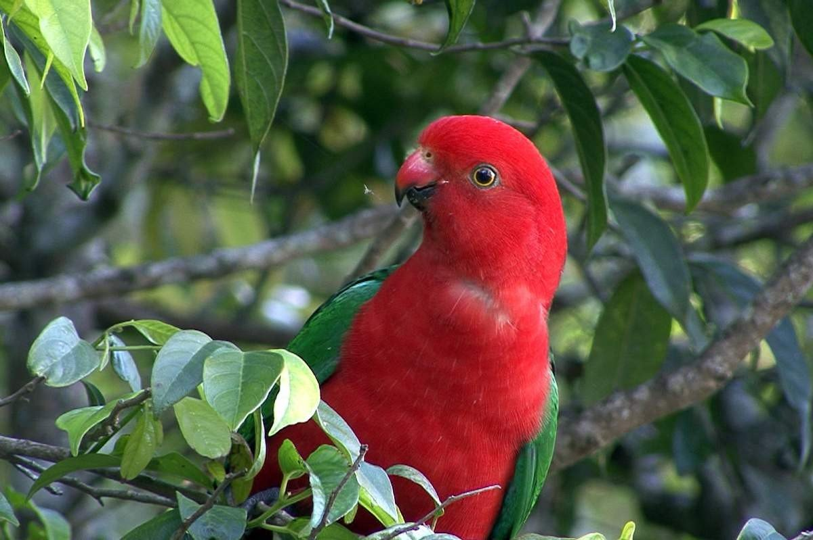

Гиацинтовый ара

Гиацинтовый ара является самым большим и, пожалуй, самым красивым попугаем.
Он дружелюбный, доверчивый и любознательный питомец. Они птицы шумные: не только кричат, но и издают звуки, похожие на лай, рычание или визг. По характеру он напоминает маленького ребенка, который требует заботы и постоянного к себе внимания. Хозяева таких попугаев отмечают, что при всем своем дружелюбии, эти птицы могут быть и злопамятными.
При недостатке внимания попугай будет скучать и выщипывать себе перья.
Поэтому если вы не сможете уделять пернатому менее двух-трех часов в день, лучше попугая вообще не заводите.
Красный ара

Это большой попугай, с ярко окрашенным туловищем в красные тона.
Между крыльями проходит жёлтая полоска, длинный хвост, имеет вкрапления синего цвета.
Хорошо поддаются дрессировке, копируют человеческую речь, могут повторить более 100 слов.
Однако практически не содержаться в домашних условиях, в силу больших размеров и пронзительного крика, чем доставляют множество неудобств хозяину.
Синий ара

Сине-желтый ара считается ярким представителем семейства попугаевых.
Увидев его один раз, точно не забудешь никогда.
Они пользуются большой популярностью среди разводчиков попугаев за счёт яркой и насыщенной окраски перьев.
Молодые особи быстро приручаются, в силу развитого интеллекта могут воспроизводить несколько десятков слов.
Жако

Жако – птица высокоинтеллектуальная, самостоятельная и слегка эгоцентричная.
По сути, для жако семья владельца становится настоящей стаей, попугаю важно чувствоваться себя нужным и
важным, активно участвовать в делах.
Жако – очень сообразительные и самые чувствительные из всех видов попугаев.
Они ничего не упускают из вида, любят внимание, некоторые обожают сидеть на руках или плече.
Владелец такой птицы должен проявлять твердость и уверенность в действиях.
Какаду

Какаду – крупная белоснежная птица, украшенная желтым хохолком.
Элегантные крылатые красавцы хорошо известны в нашей стране и пользуются популярностью в качестве домашних любимцев.
Какаду эмоционален, сильно привязывается к своему владельцу и не переносит одиночества.
Он должен постоянно быть рядом с хозяином, буквально стать его тенью. Иначе птичка начинает тосковать и от горя выщипывает на себе перья.
Эти красивые белоснежные птицы отличаются шумным поведением и любят покричать, особенно по утрам.
Амазон

Амазоны имеют плотное, довольно крепкое телосложение.
У них зеленый окрас; голова, шейка и крылья могут быть украшены перьями других цветов.
Амазоны отличаются коротким закругленным хвостом.
Амазоны выгодно отличаются от других птиц высокой приспособляемостью к условиям жизни.
Достаточно общительны, но бывают агрессивны и очень дорожат своей независимостью и территорией.
Если в доме есть маленькие дети, то от покупки лучше воздержаться, пока ребенок не подрастет.
Еще лучше, если вы обладаете некоторым опытом содержания попугаев.
Но совместное проживание с вами не один год делают птицу верной и преданной, что называется – на всю жизнь.
Королевский попугай

Королевские попугаи не зря так названы – потрясающий окрас их оперения и многогранность характера действительно можно отнести к королевским особям.
Это очень подвижные и энергичные птицы. Они способны ловко передвигаться по деревьям и отлично летают.
В неволе лучше всего содержать королевских попугаев в просторных вольерах с возможностью летать.
В маленьких клетках они «затухают» и становятся скучными.
Поселив их в больших клетках или вольерах у вас будет возможность наблюдать за повадками любимцев и их отношениями между собой.
Также вы сможете полюбоваться блеском перьев этих благородных птиц в лучах солнечного цвета и окунуться в атмосферу оживленных тропических лесов.